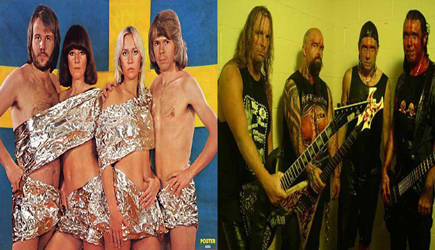

En los años 80’s la diferencia
entre rock y pop era muy clara,
pues por un lado tenías a un Quiet Riot
llegando al número uno del Billboard
tocando puro heavy metal y en otro
extremo tenías a Cindy Lauper haciendo
un pop rítmico con esa voz tan aguda
que la caracteriza.
Actualmente escuchas a un Paramore que suena
con guitarras distorsionadas, pero son tan
melosos que inmediatamente se vuelven pop
igualmente que Tokio Hotel,después te encuentras
a una Lady Gaga que es claramente un cantante popera,
y que le pone tanto ritmo a su música que parece que
escuchas música Dance.

| Artistas | Musica Pop | |
| Artistas POP | Artistas Rock | |
| Desde 2000 hasta 2009 | 11.9-35 | 6.3-28.6 | Actualidad | 20.3-42.9 | 100-18.4 |
| Comparacion entre POP y el ROCK | ||